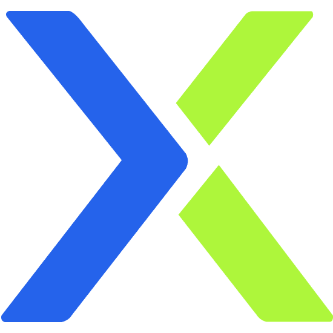

Connect your exchange
In the dashboard, open Accounts and add an exchange (Binance, Bybit, OKX, and others supported by OpenTrader). Use API keys with trade permission only — never enable withdrawal on bot keys.

YieldlyX
Powered by OpenTrader — bots, strategies, and live markets on your desktop.
First launch only. You will use this to unlock the trading dashboard on this computer.
Initializing trading engine…
Opens automatically when the engine is ready.
In the dashboard, open Accounts and add an exchange (Binance, Bybit, OKX, and others supported by OpenTrader). Use API keys with trade permission only — never enable withdrawal on bot keys.
Enter the trading password you created when prompted. It is stored only on this computer and is not sent to any website.
Browse built-in strategies (grid, DCA, RSI, and more) or deploy a custom strategy. Set your trading pair, position size, and risk limits before going live.
Test with small size or demo mode if your exchange supports it. Confirm fills, fees, and stop-loss behavior before scaling capital.
Watch open positions, P&L, and bot logs in the dashboard. Pause bots during high volatility or news events. Never risk more than you can afford to lose.